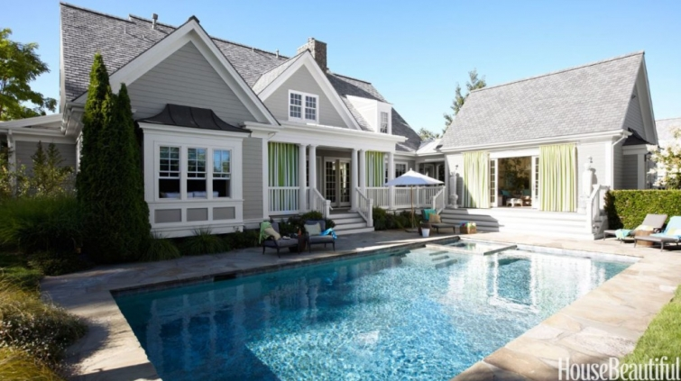
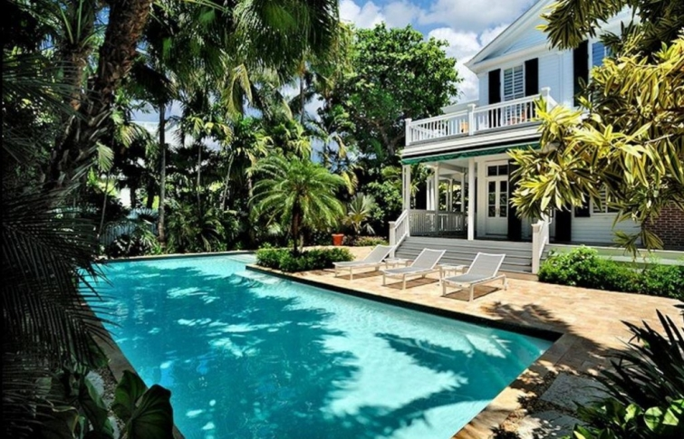

.png)
.PNG)
.PNG)
.PNG)
.PNG)
.PNG)
.JPG)
.JPG)
.PNG)
.PNG)


source
Every summer when we were young, from the moment my brother, sister, and I got out of school, we would beg our parents for a pool.  It was always so hot here in Georgia, and to us, a pool seemed to be the best place to spend a summer.
porch.com
And we didn’t want one of those flimsy inflatable baby pools you would fill up with a waterhose while it sat on your patio.  No sirree…we wanted the real deal…a big in-ground pool. (So much better than running through the sprinkler!)
I knew our home would be THE social place if we just had a pool.  Our friends would hang out there all summer long.  We would have the best parties in town. My August birthday party would be the highlight of the season! (That’s what a pool does for you, right?)
But our parents always said “No, it’s too much upkeep.” How could they wreck my social life plans like that?? But we continued to pester and beg and plead.  So our mom did the next best thing.  She got us a membership in a local club’s pool.  It had a long and fancy name, but we just called it…
The pool.
In the eyes of an 8 year old, The pool seemed huge – with 2 slides and a diving board…and best of all, a whole bunch of my school friends also went there to swim!  🙂 (Imagine that!!) My mother would load the 3 of us up in her Chevrolet along with a bag of unshelled butterbeans, some newspaper, and a big bowl. Then off we’d go for the day.
When we got there, we would hop out of that car and make our way to a table with a striped umbrella above it, plop our towels on it, and then gingerly make our way down the steps in the shallow end– one  step  at  a  time– freezing our little bottoms off the whole way! (You know how that feels. 🙂 )
We would splash, play Marco Polo, and swim for hours, while our mother sat under that umbrella shelling butter beans and chatting with her friends who would show up at The pool – their own children in tow behind them.
When our tummies would begin to growl, we would climb out of that cold water, quickly scurry over to the mothers, and wrap ourselves in towels.  They would give us coins, and dripping wet we made our way to the concession stand at The pool.
Now this was one of our favorite parts of going there!  That little room was like Heaven to our gang. It had shelves full of assorted chips, a cooler of drinks, and best of all – a freezer with yummy ice cream treats – ice cream sandwiches, popsicles, frozen Nestle Crunch bars, Drumsticks, Fudgsicles, Klondike bars, and the one I would always choose…the Creamsicle…- that delicious duo of orange sherbet and vanilla ice cream…mmm.
(Can you taste it??)
After making our selections and handing over our money to the lifeguard, we would sit shivering on an old wooden bench, wrapped in our towels, enjoying every little bite of our snacks.  Then we would wait the lifeguard-required 30 minutes before jumping back in the water – this time cannonball style.  (Much faster than making our way down the steps again, right?)

And so went our childhood days at the pool. Â Our hair became bleached summer blonde while our skin turned that lovely golden shade of bronze…and our parents never did put in a pool.
So when I started college, where did I head the first hot days of my freshman year?  Why to the college pool of course.  I would go to my classes, do my job in the dean’s office, and then head over to swim several afternoons a week . And my college even had a swimming requirement. (Those folks knew what was important!)
It felt so professional to swim there. For the first time I was swimming in a pool that had…lanes! 🙂  Not that I was competitive or anything like that, it was just to cool off and have fun…and work up an appetite!
I can remember one evening after swimming for a while, I returned to my dorm room soooo famished, I ate an entire package of Oreos in one sitting! ( Oh for the days when I weighed 98 lbs. soaking wet…!)
And now fast forward…Years later came marriage and children – children who asked their parents for… a pool. The yard in our first home did not have room for one. There were way too many gorgeous old trees – including a beautiful massive old hickory (that seemed to drop nuts all the time!) So we, as parents, said No, not now.
Fast forward again to this house. Our current home has a yard that has not just one, but two spots that would be perfect for a pool. We even had a pool builder (Is that what you call them?) come to the house, look at the locations, and give us an estimate.
Too expensive for our budget at the time. So again we said no to our children (and ourselves as well. 🙠)
But my husband did the next best thing.
He built a deck in our back yard strong enough to hold the weight of a pool. (It really helps that he is an engineer. 🙂 ) And we put an above ground pool on that deck for a number of summers.
Summers when our children would skip through the house, grab a towel off a shelf, run through the porch yelling, ” We’re going out to the pool,” slamming the screen door behind them. Summers when their hair turned bleach blonde and their skin turned golden bronze. Summers when the August birthday children had pool parties to celebrate those birthdays. 🙂
I did not have fresh butterbeans to shell while watching my children like my mother did while keeping up with us, but I did have magazines and novels to read while sitting under the whirling blades of a ceiling fan on our screened porch…keeping an eye on our kiddos while they splashed about and played Marco Polo.
New England Home May/June 2008
Those summer days are long gone now. The pool I enjoyed as a child has been closed for many years. Our deck pool has been taken down. Our sons prefer being in a river or lake over swimming in a pool, and our daughter would rather “lay out” and work on her tan now. But I, on the other hand, would rather be on a float in that cold water. So here is the pool I am currently enjoying this summer. 🙂

But I still wish we had one in our own backyard. I would love the one 4 photos up (with the little boy in it.) It looks small enough to be manageable but still refreshing (and maybe affordable?)
Maybe one day…
So I hope you have enjoyed all the pool eye candy here today, and I hope you are having a fun summer with time to relax and splash about. I’ve been wondering…Do you have a pool at your house? If so, how much time does it take to keep it up? Would you do it again if you had the choice, and would you buy a house if it had a pool in the yard? I’d love to know. 🙂
Stay cool!
Until next time…
p.s. I forgot to tell you something!…I am still in the land of techno troubles…brand new computer here with a touch screen that I am having a devil of time figuring out how to use. I also have not been able to add Talk of the House email to it, so there are plenty of things to do and learn! Oh, and there is still NO internet at the house..so again I am doing a post away from there. (I think we put the cart before the horse on this one!) Anyway, please be patient with my slowness as I am learning how to use this thing!


.PNG)
Oh, what I would give for a built in pool. Love that Midwest Living picture. Screened porch, pool, built in exterior fireplace. Love it! So many great pictures here Kelly. We did the local pool passes for years when the kids were small. My husband finally caved after the first two kids were out on their own and purchased us an above ground pool. We also purchased a new hot tub as well. I have to say we use the hot tub more than the pool. Last winter was the first year we did not keep the hot tub up an running all year. The winter was just too bitterly cold. Vortex Midwest!! My husband usually opens and closes the pool down for the season, but I maintain both. Yes, I am the pool girl, but I don’t mind. Now, if our home was only lakeside. 🙁
Outdoors rooms, outdoor showers – inviting garden spaces make the experience magical and so inviting … Happy Summer!
——————————————————————-
Thank you for dropping by to read the post Eileen! Yes, all those outdoor spaces add to the season’s joys.
Happy Summer to you too!
Kelly
I enjoyed looking @all these photos. We do have a pool. They are a lot of work but worth it . For some reason my comments aren’t all posting. I wonder what I am doing wrong.
DiAnne
We had an above ground pool at our old house, a lot of work! But thankfully my hubs and daughters cleaned it most of the time. We don’t have one now, but our youngest daughter has an in ground one – thanks to the generosity of my brother in law. He lives in an apartment above their detached garage. They bought the property together to benefit both of them, plus daughters family. Five acres, house for daughters family, separate space for uncle (single) and room to play for the grands. I want to move in! 😉
They say the pool is not hard to maintain, and I have heard in ground are easier to take care of than above ground. I never learned to swim, even though I tried many times! I almost drowned in a river as a teen, so have a fear. But I love looking and hearing water anyway!
———————————————————————-
Good grief! That is terrible that you almost drowned Marianne! I do wish you could learn to swim. It is such a good thing to know (as I am sure you are aware.) It sounds like your family has a good thing going with their land, living spaces, and pool. How smart! And thanks for the info on taking care of the pool. I will keep it in mind when we get serious about a pool.
Kelly
Yes we have a pool and I would never want to live in a house without one!!! We love it and my husband says it’s not really that hard to take care of, so it’s a breeze for me!!!
Love your blog,
Robin
———————————————————————–
That is good to know Robin! Thank you for your input. It seems that everyone says, “My husband takes care of it.” But I am glad to hear that your husband thinks it is not hard to do. I will pass that info on to my husband! 🙂
So happy you are enjoying the posts here. Thank you for reading!
Kelly
I could never live with out a pool. In the Capital Region of NYS, we only have 3 or 4 months of pool weather; but our weather can be very hot and humid. When I bought my home, I was not able to install a standard pool. But since I did not live far from my parent’s home, going there for our family pool was never an issue. Then I found a very unique pool. It is not a tradiotional above ground pool and requires no digging. The city in wich I live has zoning guidlines for standard pools, but this pool can be taken down quickly and moved. It stays up all year and can withstand Winter. It is a nice size, 10 feet by 12 feet and 4 1/2 feet deep. Having a pool my whole life, upkeep is never been an issue. It is just one more household chore. I don’t spend any more time caring for it than I do any other part of my home. Having the opportunity to slip out the back door on a warm Summer night and jump in the pool before bed makes it worth it.
———————————————————————
It is hot and humid here as well Margaret, and yes that makes a pool needed! Your pool sounds just perfect! And like you said, it would be wonderful to have a swim before bedtime. Thank you for sharing your positive views on having a pool. 🙂
Kelly
Guess what we had for dessert last night…left over homemade vanilla ice cream topped with orange sherbet. Probably the best creamsicle EVER! Yes, I would love to have a pool but my husband thinks he would have to do all of the work. I like the one with the rock work and flowers. I think it is the fourteenth one. I have fond pool memories of times spend at our next door neighbor’s pool and fun pool memories from the beach house w/pool that my extended family rented for several years. (This is our first summer of not renting that house with the pool and I miss it.) Really, Kelly, you should put in a pool and decorate it beautifully and share it with all of us. It would just be part of your blogging job.
———————————————————————–
YUM! What a super idea for a dessert. I can see us copying that one now!! (Thanks for the idea Kathy. 🙂 ) That stonework one had some MAJOR landscaping going on with it, didn’t it? A beach house with a pool sounds like a perfect home for summer…vacation or permanent residence. So sorry you are not staying in that house again this year. Yes, we should put in a pool. My husband said that perhaps all my blog readers would like to make a donation towards a pool fund! LOL Or…maybe I could write it off as a tax expense for my blogging “business.” Wishful thinking…
Happy Friday!
Kelly
I have missed your posts, but this one made up for it. I have many memories of being in the water at my grandmother’s lake cottages, but no pool. All the commotion and noise was a bit much, but loved going to the lakes and playing with friends on the beaches and in the water.
You always find the most beautiful feature. I know you will get your computer issues worked out. Be patient with yourself. We will all be here. Besides, most of us are so busy with summer outdoor work and activities there isn’t time to read a lot of posts anyway.
Stay cool and happy.
————————————————————————
Aw thanks Joan! I am happy that you enjoyed the post. A grandmother with a lake cottage…it doesn’t get much better than that! I hope you are right about the computer issues. I am SO not a tech person, and my tech boys are not around to bail me out this time. 🙁
Enjoy your summer activities!
Kelly
We have a pool in Texas Kelly. I think it is a necessity with this heat. My husband does all the work and it really doesn’t’ take much time at all. His biggest time allotment is cleaning the leaves in the fall. If we were to build our own pool we would design a pool that could have a cover on it for the messy seasons. Our pool is open year round. We have an attached spa and when it warms up you can find me in the pool or spa every day with my book. Wouldn’t be summer with out the pool:-) And the grandchildren love it.
———————————————————————-
I would agree with you Sue. With the heat there should be a pool! Thank you for the info on the need for a pool cover. I will definitely keep that in mind if we venture into putting in a pool. How wonderful you have an attached spa with yours! I would never want to get out and do those things life requires…like cook, clean, and wash the laundry!
Enjoy your Friday!
Kelly
Love, love, love this post! One of my summer favorites besides a trip to the beach is being at the pool! I am so glad to hear that you belong to a pool!! Sometimes I feel a little silly showing up at our pool with no kiddos and just a bag full of good magazines and diet cokes but of course that doesn’t stop me from going! Last September I was the last person to leave on the last day the outdoor pool was open for the season. I was at the pool today and I overheard a great quote from a mama in the pool with her small son. Son, “Mama, what time is it ?”
Mom, “son, IT’s summer and there IS no time until August 24!” ( that’s when NC goes back to school) Have fun at the pool, Kelly!!!
——————————————————————–
Thank you Katrina! I think swimming is great for your health no matter what your age. I bet if they did a study they would find that swimmers live longer. 🙂 How funny that you were the last to leave on the last day! That is great. Love the comment the mom made. August 24! Wow! Our schools here will have been in session for over 3 weeks by then. 🙠North Carolina does it right!
Kelly
well THAT felt like a mini vacation! We have had pools with two previous homes and loved them…especially with kids. It can be expensive–but so nice when we lived in Florida!
————————————————————————
Hooray for mini vacations! (even if they are virtual!) I thought it would be expensive but definitely worth the cost. I know we would all use it a lot – including my mother who loves to swim. And it is hot enough here that it could be used from April to October.
Kelly
Shelling butter beans at the club. It doesn’t get more Southern. Did she drink an ice-cold Coca-Cola from a little glass bottle too?
Love the pools. I remember having to take dreaded swimming lessons at the YMCA so I could save my poor Mother who is terrified of the water!
———————————————————————-
I don’t think she had her Coke in the lovely glass bottle since they did not allow glass around the pool. (But I LOVE those bottles!) I should have included swimming lessons in my post! Darn it. They only had them at like 8:00 in the morning, and that water was FREEEEEEZING! But all 3 of us took lessons. I think it is very noble that you took them in order to save your mom. (Perhaps your mom should have taken them as well. 🙂 )
Kelly
I live in Florida,and yes we most definitely have a pool.A necessity in Florida! Screened in.Another necessity.We have a salt chlorinator,and automatic pool cleaner and a solar heater.It takes hardly any time to take of.I think the pool cage takes care of the dirt,etc.We have the water tested once a month,and all it usually needs is some acid and a bag of pool salt(maybe every other month.Well worth it.Plus the grand kiddoes love it(we have a waterfall,too!).
———————————————————————
If I lived in Florida I would most certainly want a pool too. You could use it almost year round in certain parts of the state! A screened in pool would be great for night swimming. I would love that! And a waterfall! Your pool sounds just perfect Chris. I’ll be right over! LOL
Kelly
I always wanted a pool home so when we moved to FL with a 4th grader and a 9th grader– a pool with a nice split plan house was what we were looking for and we were able to have one while the girls were at the right age to enjoy! We had pool parties and truly enjoyed every minute of it. Poor hubby had the job of cleaning and maintaining it! When the girls were in college we moved to a new home without a pool and always talked about having one built. Then we moved to the lake house with jet skies and pontoon and a beach for parties and bonfires. So many memories of family gatherings. Now we love to visit the condo on the beach. Still at times I think, maybe a small pool or even a fishpond would be nice!! But probably not!! Love your pool for the summer– and I think your home would be a perfect place to have a nice pool — for the future grandchildren and your retirement years!!
——————————————————————–
It sounds like you had a pool at the perfect time for your children, but I do think one now would be nice as well. Your granddaughter would enjoy it! But then again, a lake is pretty hard to beat!! (And the beach too. 🙂 ) We do have a good place to put one..right off our deck. Just have to see how this retirement money stretches!
Kelly
We had an above ground pool once. We got it on a whim and it wasn’t well thought out and it ended up the water was always cold and we just didn’t use it enough to keep it. We should have gotten a smaller one when our children were younger and cut some trees. But, you know hind sight is 20/20. 😛 I can’t imagine we’ll ever get another one. Haha, unless for grandchildren in the future. 🙂 That is probably when you’ll get one too. 🙂 I love all those pool pictures you shared though. Beautiful.
————————————————————————-
It does require some forethought…like how to level the ground for it. (That is why we ended up with a deck to hold ours.) Glad you liked all the pool eye candy Gina!
Happy Friday!
Kelly
its now time to put the pool in. You have a great-nephew who wants to come swim!
——————————————————————-
That’s true! You should put one in too! 🙂
Kelly
Love all those pool pics. I too, spent summers at our community pool…I got the same excuse…too much work! When my sons were little…we had the requisite inflatable pool. Later, when they were old enough to ride their bikes unsupervised…we joined a nearby pool for the summer months. Our neighbors have a pool…and hardly ever use it…go figure? Although…our summers as of late have been pretty cool. Backyard pools in Wisconsin aren’t very practical considering the climate…unless they are indoors! 😉
———————————————————————–
Yes, Donnamae, I too would think a Wisconsin pool would not be used as much as one here in Georgia. How sad that your neighbors do not take advantage of their pool. (Especially when there are those of us who dearly want to use one!) An indoor pool for you is the answer. 🙂
Kelly
Thank you for sharing your childhood pool memories. You are a great writer and the pictures just make it come to life. I too share your desire to have a small, manageable pool in the backyard. It would just have to be wonderful to be able to swim at midnight or as the sun is coming up. Thank you for preserving through your technical difficulties…we love your posts!
——————————————————————
Goodness! Thank you for the compliments Carol Ann! A midnight swim WOULD be so wonderful. I’m so glad you love the posts. (I love that you read them! 🙂 )
Kelly
We have a pool! In New England so our time can be short. We have a heater so we usually open up around Mother’s Day and the latest we closed it was Oct. 15th. Now with kids grown we usually close it down in Sept. It is a unite pool with a pebble tech finish and natural stone decking. the grands come to use it and after working in the garden we jump in to cool off. the biggest work is opening and closing and there are pool guys you can hire. Hubby prefers to do it himself. I have never regretted putting it in. Nothing like coming home to the grandchildren swimming or everyone here on a Sunday just kicking back swimming and enjoying each other. There are also self cleaning pools too
———————————————————————
It sounds like you make very good use of your pool Donna. Jumping in after yard work sounds great! I have often commented I would like to do the same thing after working around here (if we had one.) Thank you for sharing your positive experience with a pool. Glad to hear it is not all work work work to keep it up. 🙂
Kelly
I missed you sorely and I bet we all can relate to “techno troubles”.
The first house we bought in CA after moving here from home state of WV had an in-ground pool and YES, it was a lot of work, a lot of expense, and a lot of fun. We lived there 4 years (kids went from age 4 and 3 to 8 and 7). They were avid swimmers and divers. I had had them in swim classes at the Y from ages 2 and 1. All houses since have not had pool….My son’s house has a pool but he’s selling it (a fixer/flipper). I do miss the ease and convenience of just going out back door and there’s the water and I miss hearing the shouts of fun from kids play…ah, so nice. However, at this point in my life it isn’t practical to put in an in-ground pool at this house. But if I did it too would be the same choice as you, Kelli,…I like the one with the little boy in the picture.
———————————————————————-
So glad I was missed! That was great that you had your children swimming at such a young age. It is a life skill everyone should know how to do. A small pool would do us here (I think.)…unless of course we one day have a lot of grandchildren. But for now it would be a wonderful place for my husband and me to relax and cool off.
Kelly
Kelly,
I love all of the pool pictures! I too would love a pool and think I could keep up with a small one in the summer time. It’s just a matter of expense at this time. I am sorry to hear that you are still having technology troubles! That is so very annoying, I know! Good luck with all of that!
———————————————————————–
Hi Dawn! I’m glad you liked the pool eye candy. Wish we both had one of those lovely pools. Like you, expense is the factor (more than the upkeep) at this time in our lives. Thanks for the condolences on the tech troubles. They ARE annoying! (especially since I do not know how to fix them!)
Kelly
My hubby would LOVE a pool and I am on the fence. We had only one pool and it was above ground with a beautiful deck hubby built around it, but it seemed like all MY time was spent cleaning it. Every time I thought I could get in and relax the girls came home with friends and that idea was blown out of the water. Now we are empty nesters, girls and grands live in other states but we are on an almost 2 acre wooded lot. We are still contemplating the idea of one though.
———————————————————————–
It is usually the other way around Cheri! But in all the other comments here, it seems the husband does the pool cleaning not the wife..so that would explain your feelings. I think you would get your time to relax in the pool now that your children have moved away from home. Perhaps you could invest in one of those self cleaning systems that might make it easier to keep up. Good luck with your decision!
Kelly